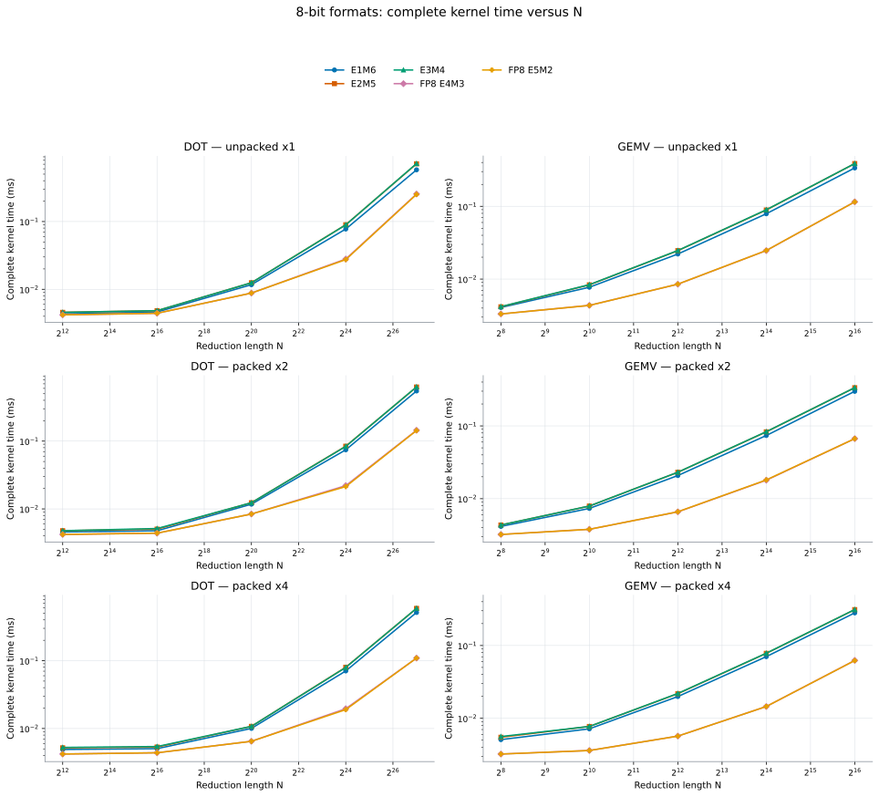
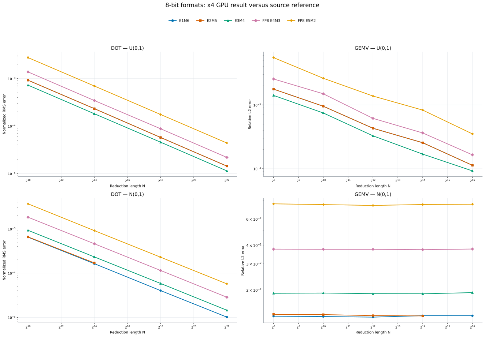
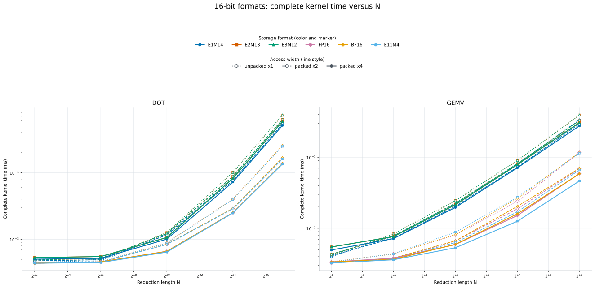
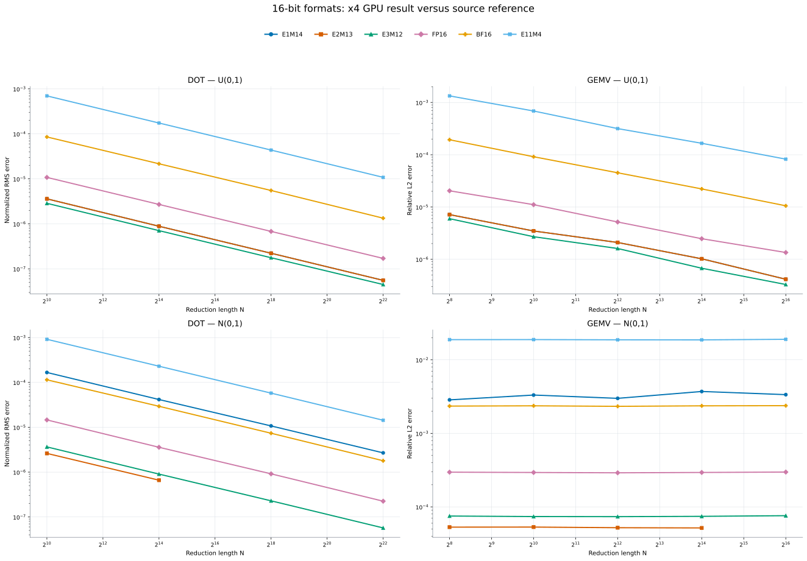
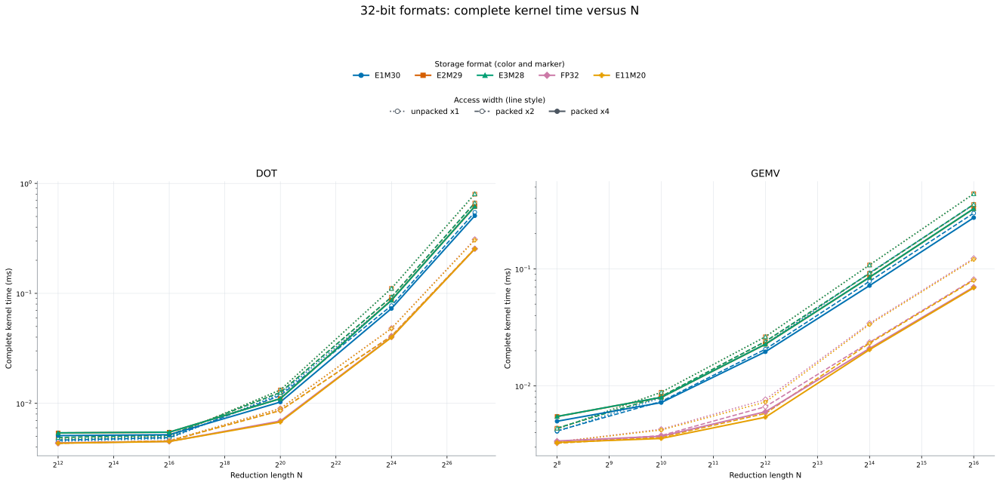
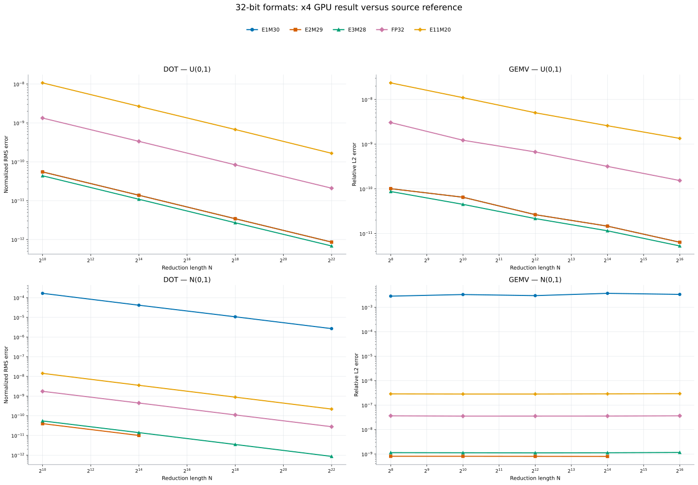
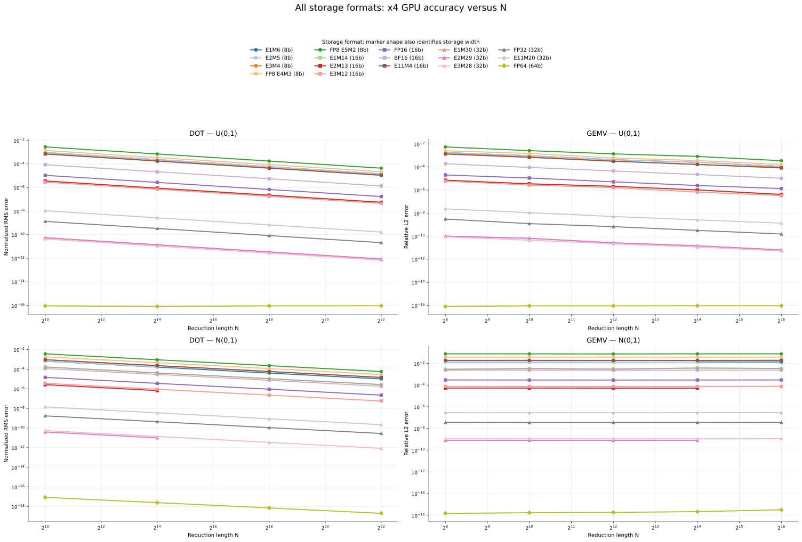

Same-bit format comparison
High-resolution performance and accuracy comparisons for formats with equal storage width.
8-bit performance
All five 8-bit formats and all x1/x2/x4 access widths share the same axes. Color and marker identify the format; line style identifies packing.

8-bit accuracy
DOT uses normalized RMS error; GEMV uses relative L2 error. Curves are total x4 GPU error versus the original FP64 source for both distributions.

16-bit performance
E11M4, FP16, BF16, and all custom 16-bit layouts are overlaid with their x1/x2/x4 access widths.

16-bit accuracy
The same primary DOT and GEMV metrics compare every 16-bit format on U(0,1) and N(0,1).

32-bit performance
FP32, E11M20, and all custom 32-bit layouts are overlaid with x1/x2/x4 access.

32-bit accuracy
The same primary DOT and GEMV metrics compare every 32-bit format on U(0,1) and N(0,1).

All-format accuracy
This puts every 8-, 16-, 32-, and 64-bit format on the same log axes. A line ending early indicates non-finite outputs at larger N.

Packing and accuracy
x1, x2, and x4 are literally identical at the storage-quantization level: they read the same encoded values. Their complete GPU results are not guaranteed bit-for-bit identical because lane grouping changes the FP64 reduction order. For 8-, 16-, and 32-bit storage that arithmetic difference is far below the quantization error, so these format-comparison plots show the x4 result once. The separate scalar and arithmetic page retains the x1/x2/x4 kernel-only validation. FP64 is the special case where reduction rounding is the remaining error.